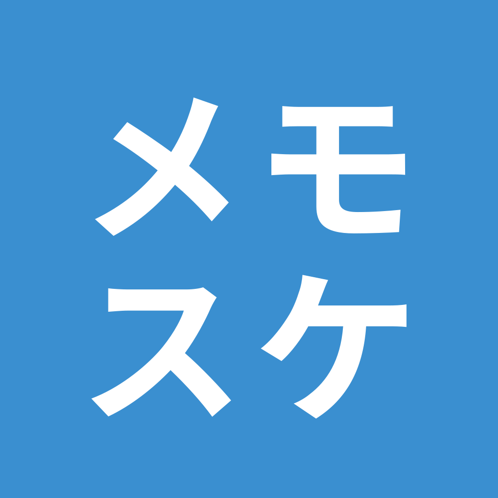

プライバシーポリシー
iPhone のアプリ「メモスケ」（以下「本アプリ」）での、利用者の情報の扱いについて説明します。
集める情報
本アプリは、利用者の情報を集めません。作者が利用者の情報を受け取ることはありません。
- アカウントの登録はありません。
- 広告、利用状況の計測（アクセス解析）、トラッキングは行いません。
- 作者のサーバーへ、メモなどのデータを送ることはありません。AI を使ったときだけ、メモの一部を AI の会社へ送ります（下の「AI を使うとき」を見てください）。
データの保存場所
メモ・予定・添付・設定などのデータは、利用者の iPhone の中だけに保存します。
データが消えたときに戻せるよう、本アプリの中のファイルにも控えを保存します。この控えは、利用者が iPhone のバックアップ（iCloud バックアップなど）を使っている場合、そのバックアップに含まれます。iCloud バックアップの扱いは Apple のプライバシーポリシーに従います。
利用者が「書き出す」を選んだときは、データを1つのファイルに書き出し、利用者が選んだ場所に保存します。
パスワード欄
アカウントのパスワード欄は、利用者が決めた合言葉で暗号化してから保存します。合言葉そのものは保存しません。作者を含め、合言葉を知らない人は読むことができません。合言葉を忘れると、作者も戻すことができません。
インターネットにつながるとき
本アプリがインターネットにつながるのは、次のときだけです。どちらも作者のサーバーは通らず、相手に直接つながります。
- URL をメモにしたとき、題名にするため、そのページを読み込みます。
- YouTube・X（旧 Twitter）・TikTok・Vimeo の URL のときは、題名を取るため、それぞれの公式の窓口（oEmbed）に、その URL を問い合わせます。
このとき、相手のサイトには、ふつうに Web のページを開いたときと同じ情報（IP アドレスなど）が届きます。その扱いは、それぞれのサイトのプライバシーポリシーに従います。
「Google カレンダーに登録」を選んだときは、予定の内容を入れた Google カレンダーの画面を、ブラウザで開きます。
AI を使うとき
AI は、使っても使わなくてもかまいません。使わなければ、メモがどこかへ送られることはありません。
AI を使うと決めて、自分で申し込んだ AI の会社（Anthropic または OpenAI）の鍵をアプリに入れたときだけ、メモの一部をその会社へ送ります。作者には届きません。
送るものは次のとおりです。
- AI に問題を作らせるとき：選んだメモの題名・タグ・書いた日と、本文のはじめの部分（1件500字まで）。送る前に、どのメモを送るかを見せて、よいか聞きます。
- AI に似たメモを探させるとき：探す言葉か、開いているメモの本文のはじめの部分と、候補のメモ（50件まで）の題名・タグ・本文のはじめの部分。
パスワードを書いたメモと、「送らない」と決めたタグのメモは送りません。送ったものは、その AI の会社の決まりに従って扱われます。鍵は iPhone の中に安全にしまい、その会社に送るときだけ使います。
iPhone の機能へのアクセス
次の機能は、利用者が使うときにだけ、iPhone の確認を出して許可を求めます。許可は iPhone の「設定」でいつでも取り消せます。
- リマインダー：メモの題名・日時・本文を、リマインダーに登録するために使います。
- カメラ・マイク：写真や動画を撮って、メモに添付するために使います。
- 写真：利用者が選んだ写真だけを、メモに添付します。
- クリップボード：「クリップボードから追加」を押したときだけ読みます。
画像の文字の読み取りは、iPhone の中（Apple の Vision）で行い、画像を外に送ることはありません。
子どもの利用
本アプリは子どもの情報も含め、利用者の情報を集めません。
このポリシーの変更
内容を変えるときは、このページでお知らせします。
お問い合わせ
制定：2026年10月24日 改定：2026年11月24日（AI を使うときのことを足しました）
© Takeshi Nakano